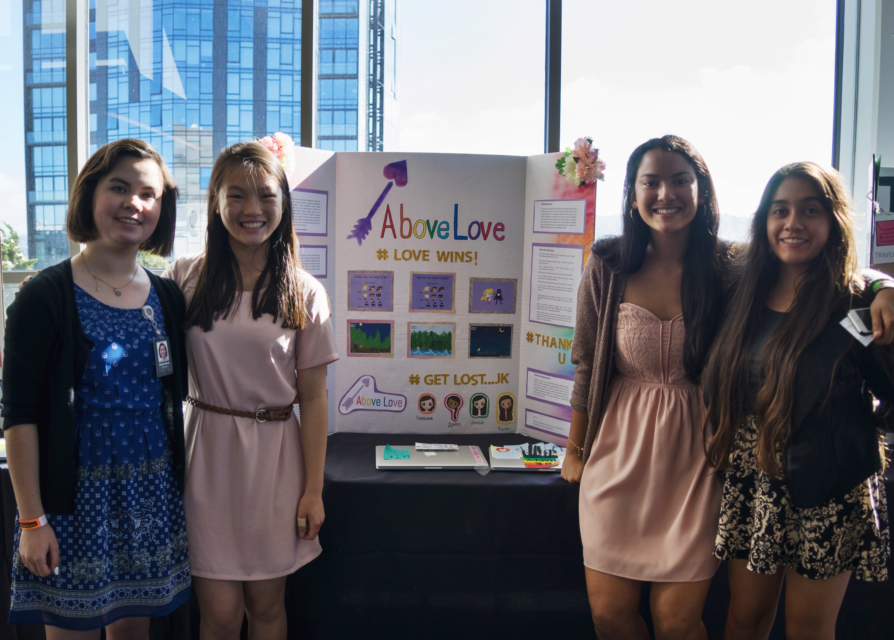

Experience
Lyft - Regulatory Reporting Intern
Summer 2019
I spent the summer working on a Python template and documentation to automate data report workflows in Apache Airflow. I also wrote SQL queries to pull data for ad hoc data requests from regulators and created an entity relationship diagram (ERD) that visualizes the relationships between the most important data tables that the Regulatory Reporting team uses. The ERD is now part of the on-boarding process for new hires.

Girls Who Code - Summer Immersion Student
Summer 2015
I spent the summer at Twitter in San Francisco and learned the basics of Scratch, Python, JavaScript, HTML/CSS, and jQuery. I applied my new skills to AI, game development, web design, and mobile app projects. I built and pitched a pro-LGBTQ, scrolling style computer game called “Above Love” with racially and gender diverse characters in a small group for our final project.
Projects

End-to-End Encrypted File Sharing System
Spring 2020
I designed a stateless client for a file sharing system in Go. The client uses symmetric and public key encryption, digital signatures, HMACs, and hash functions to provide confidentiality and integrity against a malicious server and adversarial users.
Data Report Automation
Summer 2019
I designed a Python program that pulls raw data for a regulatory report using Hive, validates and formats the report in Pandas, and sends the data report to a secure digital storage location for regulators. Using a directed acyclic graph (DAG) in Python, I built data report workflows and scheduled recurring runs of my Python program in Apache Airflow to streamline the report process for my team.
Number Classification ANN
Fall 2019
I built an Artificial Neural Net (ANN) in the RISC-V assembly language that classifies handwritten digits to their actual number. The ANN utilizes thresholding and matrix and vector operations to classify handwritten number samples to their corresponding number.

"Drive the TAs Home" - NP Hard Approximation Algorithm
Fall 2019
I worked with a small team to design an algorithm to solve the NP-Hard Metric Traveling Salesman Problem in Python and NetworkX. We used k-means clustering, Steiner trees, and DFS to build our approximation algorithm that would find the most efficient path to "drop off" TAs at their homes in a connected graph.
The Enigma
Fall 2018
I implemented a program that simulates the German Enigma encryption and decryption machine from WWII in Java. The program includes functions that represent the functionality of the physical pieces of the machine like the rotors, reflectors, and plugboard. The program can take in sets of permutations and decrpyt or encrypt a message using the same progressive substitution cipher technique as the actual machines.
Graph Package with GNU Make and GPS Clients
Fall 2018
I implemented a graph package in Java that builds directed graphs to be used to represent dependencies and traversals. I then built two clients for the package: a GNU Make client and a GPS client similar to Google Maps. The Make client uses the graph package to build dependencies in the correct order, and the GPS client finds the shortest path from node A to B.
About Me


Hi! My name is Genevieve and I'm from San Francisco. I'm a junior at UC Berkeley studying computer science and data science.
I previously interned at Lyft as a Regulatory Reporting intern and worked on automating data reports in Python, SQL, and Apache Airflow. I look forward to pursuing a career in software engineering after graduation.
In my free time, I like urban dance and gaming. I'm always down for Vietnamese food and boba!
All photos are mine or are from unsplash.com, pixels.com, and iconfinder.com.


Back To Top